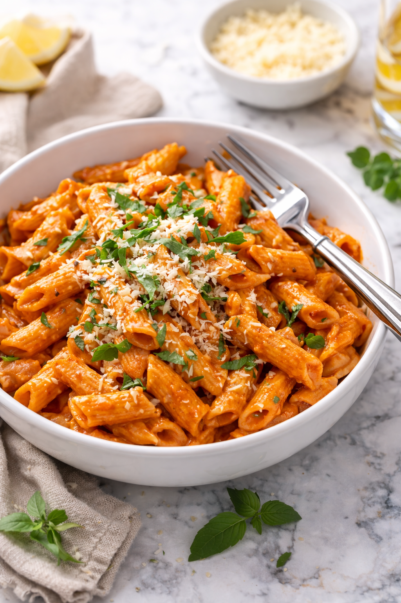

Creamy Tomato Pasta

Description:
This comforting pasta combines a rich tomato sauce with a touch of cream for a smooth, balanced flavor.
It’s easy to make and uses pantry-friendly ingredients.
Ingredients:
- 250 g (9 oz) pasta (penne or fusilli)
- 1 tablespoon olive oil
- 1 small onion, finely chopped
- 2 cloves garlic, minced
- 1 cup canned crushed tomatoes
- ½ cup heavy cream
- ½ teaspoon salt
- ¼ teaspoon chili flakes (optional)
- Grated Parmesan cheese
Steps:
- Cook pasta according to package instructions and drain.
- Heat olive oil in a pan and sauté the onion until soft.
- Add garlic and cook for 30 seconds.
- Stir in crushed tomatoes, salt, and chili flakes; simmer for 8–10 minutes.
- Add cream, mix well, then toss in the cooked pasta.
- Serve hot with grated Parmesan on top.